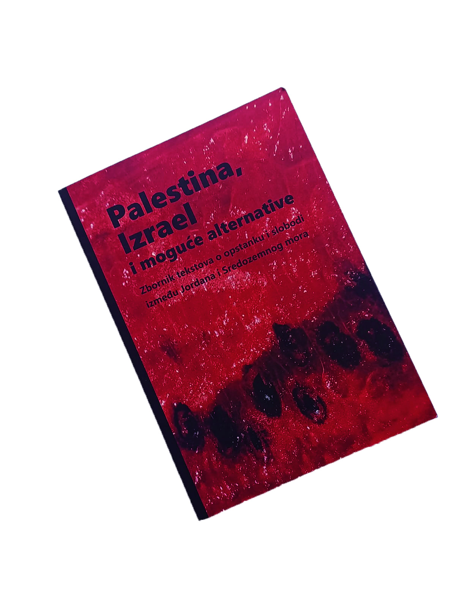
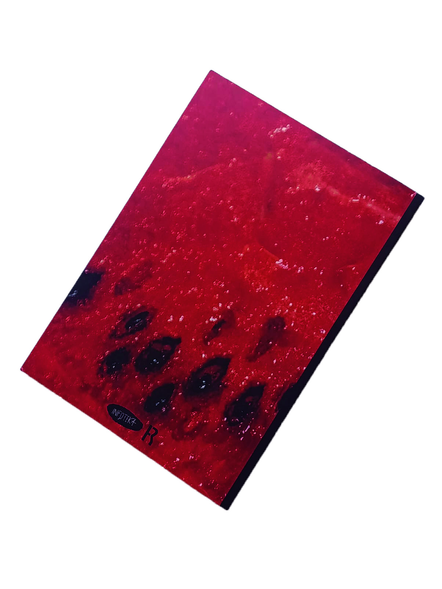
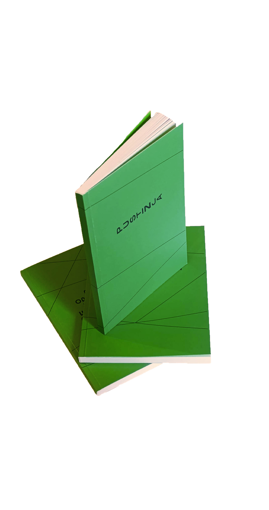
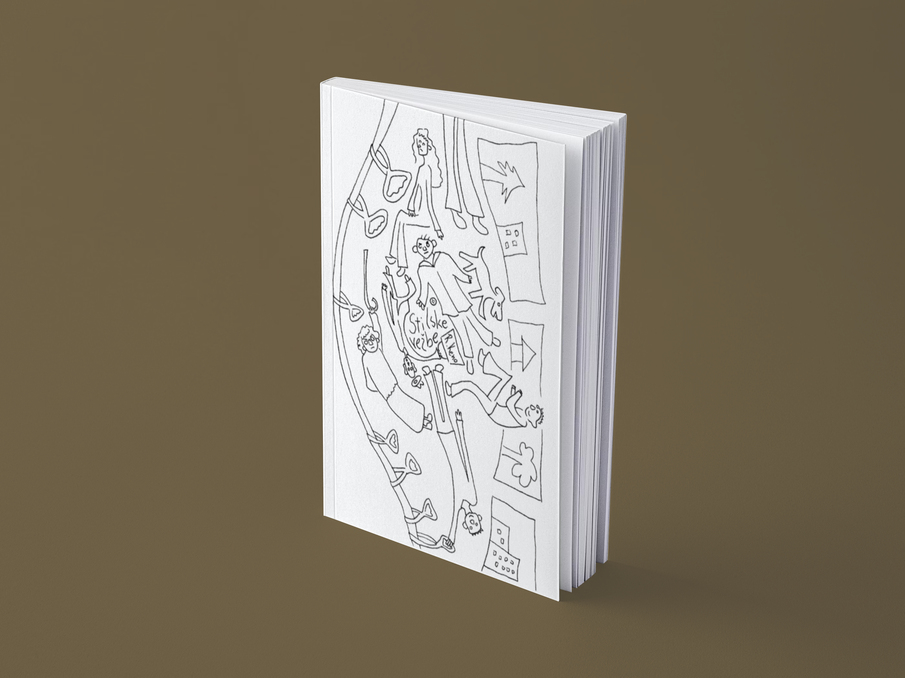

Za publikaciju Palestina, Izrael i moguće alternative radila sam dizajn korica,
a za tri knjige o radikalnim zelenim politikama radila sam dizajn korica i prelom.
Urednice i prevoditeljke:
Laura Pejak
Lidija Sredojević
KLIK ---> Izdanja:
Infoteka CK13
dodatni studentki rad --->
(to su korice za knjigu Stilske vežbe)
